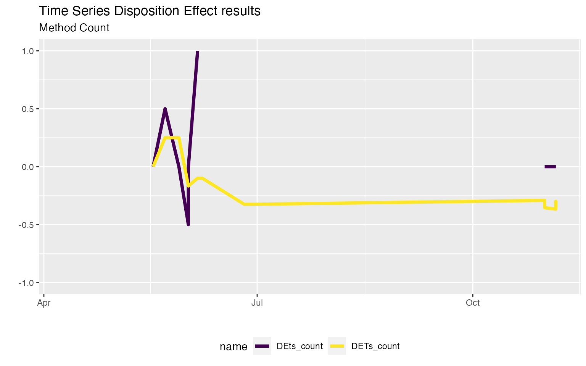
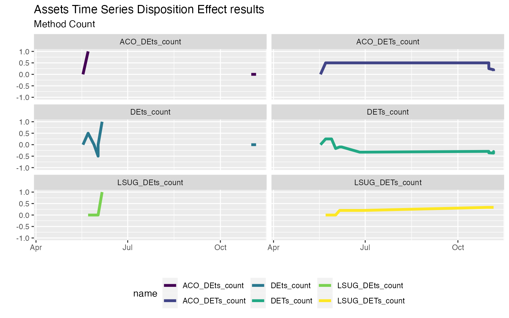
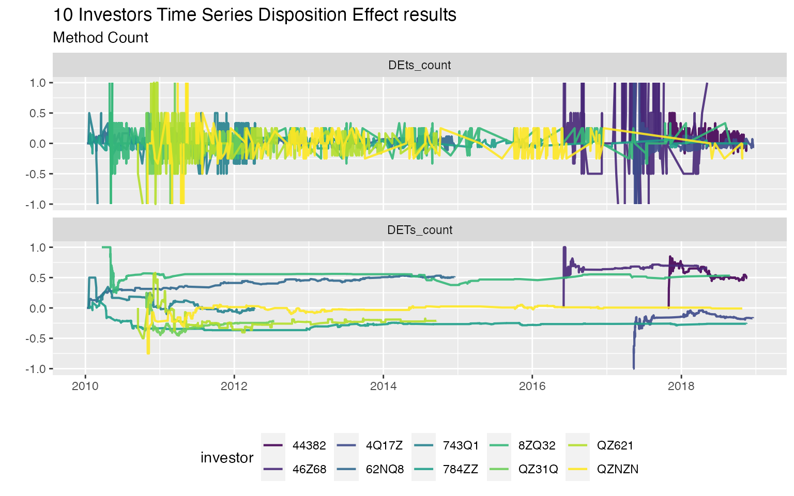

The disposition effect consists in the realization that investors are more likely to sell an asset when it is gaining value compared to when it is losing value. A phenomenon which is closely related to sunk costs’ bias, diminishing sensitivity, and loss aversion.
This irrational phenomenon has strong implications on financial markets. In particular, it is a violation of the well-known “efficient market hypothesis” that bases its foundations on the theory of rational agents.
Hence, timely capturing and understanding irrational behaviours on the financial markets is of primary interest both of researchers and investors. For this reason, the dispositionEffect package allows to quickly collect both aggregate and time series results of the disposition effect, allowing to deeply study the evolution in time of irrationalities.
The disposition effect analysis is performed on two fundamental types of data frames:
portfolio transactions, that is all the financial transactions an investor did during a specific period of time. A single transaction is made up of 6 features: the investor id, the asset id, the type of the transaction (it can be a buy or a sell), the traded quantity, the traded price, and the datetime.
market prices, that is the prices found on the stock markets for each traded asset and each transaction datetimes.
The portfolio_compute function is the core interface of the package and it is used to perform all the gains and losses computations.
In particular, the argument time_series_DE is used to enable time series disposition effect computations.
portfolio_results_ts <- portfolio_compute(
portfolio_transactions = investor,
market_prices = marketprices,
time_series_DE = TRUE
)Setting it to TRUE makes the function return two different results:
portfolio <- portfolio_results_ts$portfolio
dplyr::select(portfolio, -datetime)
#> investor asset quantity price RG_count RL_count PG_count PL_count
#> 1 4273N ACO 222 2.840 1 0 6 0
#> 2 4273N AST 0 0.000 0 1 0 0
#> 3 4273N IT3S 0 0.000 0 1 0 0
#> 4 4273N LSUG 0 0.000 2 0 4 0
#> 5 4273N TFI 1400 0.284 0 0 0 0method
timeseries <- portfolio_results_ts$timeseries
head(timeseries)
#> investor datetime DETs_count DEts_count
#> 1 4273N 2018-04-09 11:17:00 NA NA
#> 2 4273N 2018-05-17 15:06:00 0.0000000 0.0
#> 3 4273N 2018-05-22 17:11:00 0.2500000 0.5
#> 4 4273N 2018-05-28 14:30:00 0.2500000 0.0
#> 5 4273N 2018-06-01 15:27:00 -0.1666667 -0.5
#> 6 4273N 2018-06-01 15:43:00 -0.1666667 0.0For every transaction datetime two different disposition effect are computed:
Note that, by the moment, the time series computations of disposition effect are allowed for "count" and "value" methods only (with the latter the disposition difference is implemented instead of disposition effect).
The disposition_summary_ts function can be used to summarise the evolution of disposition effect over time.
disposition_summary_ts(timeseries)
#> investor stat DETs_count DEts_count
#> 1 4273N Min -0.3666667 -1.00000000
#> 2 4273N Q1 -0.3199405 0.00000000
#> 3 4273N Median -0.2916667 0.00000000
#> 4 4273N Q3 -0.1166667 0.00000000
#> 5 4273N Mean -0.1949405 0.06666667
#> 6 4273N Max 0.2500000 1.00000000
#> 7 4273N StDev 0.1912683 0.49521520A visual time series analysis can be performed as usual with ggplot2.
timeseries %>%
tidyr::pivot_longer(cols = dplyr::starts_with("DE")) %>%
ggplot2::ggplot(ggplot2::aes(x = datetime, y = value, col = name)) +
ggplot2::geom_line(size = 1.5) +
ggplot2::scale_colour_viridis_d(alpha = 1) +
ggplot2::labs(
title = "Time Series Disposition Effect results",
subtitle = "Method Count",
x = "", y = ""
) +
ggplot2::theme(legend.position = "bottom")
The time series analysis of disposition effect can be greatly improved also by computing the disposition effect over time on specif assets traded by the investor.
Indeed, the argument assets_time_series_DE allows to specify a character vector of assets’ id (that must be traded by the investor) on which to compute the disposition effect over time.
portfolio_results_ts_assets <- portfolio_compute(
portfolio_transactions = investor,
market_prices = marketprices,
time_series_DE = TRUE,
assets_time_series_DE = c("ACO", "LSUG")
)
timeseries_assets <- portfolio_results_ts_assets$timeseries
head(timeseries_assets)[, 2:6]
#> datetime DETs_count DEts_count ACO_DETs_count ACO_DEts_count
#> 1 2018-04-09 11:17:00 NA NA NA NA
#> 2 2018-05-17 15:06:00 0.0000000 0.0 0.0 0
#> 3 2018-05-22 17:11:00 0.2500000 0.5 0.5 1
#> 4 2018-05-28 14:30:00 0.2500000 0.0 0.5 NA
#> 5 2018-06-01 15:27:00 -0.1666667 -0.5 0.5 NA
#> 6 2018-06-01 15:43:00 -0.1666667 0.0 0.5 NA
head(timeseries_assets)[, c(2:4, 7:8)]
#> datetime DETs_count DEts_count LSUG_DETs_count LSUG_DEts_count
#> 1 2018-04-09 11:17:00 NA NA NA NA
#> 2 2018-05-17 15:06:00 0.0000000 0.0 NA NA
#> 3 2018-05-22 17:11:00 0.2500000 0.5 0 0
#> 4 2018-05-28 14:30:00 0.2500000 0.0 0 0
#> 5 2018-06-01 15:27:00 -0.1666667 -0.5 0 0
#> 6 2018-06-01 15:43:00 -0.1666667 0.0 0 0
disposition_summary_ts(timeseries_assets)[, 2:6]
#> stat DETs_count DEts_count ACO_DETs_count ACO_DEts_count
#> 1 Min -0.3666667 -1.00000000 0.0000000 0.0000000
#> 2 Q1 -0.3199405 0.00000000 0.2708333 0.0000000
#> 3 Median -0.2916667 0.00000000 0.5000000 0.0000000
#> 4 Q3 -0.1166667 0.00000000 0.5000000 0.0000000
#> 5 Mean -0.1949405 0.06666667 0.3940476 0.1111111
#> 6 Max 0.2500000 1.00000000 0.5000000 1.0000000
#> 7 StDev 0.1912683 0.49521520 0.1657201 0.3333333
disposition_summary_ts(timeseries_assets)[, c(2:4, 7:8)]
#> stat DETs_count DEts_count LSUG_DETs_count LSUG_DEts_count
#> 1 Min -0.3666667 -1.00000000 0.0000000 0.0000000
#> 2 Q1 -0.3199405 0.00000000 0.2000000 0.0000000
#> 3 Median -0.2916667 0.00000000 0.3333333 0.0000000
#> 4 Q3 -0.1166667 0.00000000 0.3333333 0.7500000
#> 5 Mean -0.1949405 0.06666667 0.2235294 0.3333333
#> 6 Max 0.2500000 1.00000000 0.3333333 1.0000000
#> 7 StDev 0.1912683 0.49521520 0.1393261 0.5163978
timeseries_assets %>%
tidyr::pivot_longer(cols = dplyr::contains("DE")) %>%
ggplot2::ggplot(ggplot2::aes(x = datetime, y = value, col = name)) +
ggplot2::geom_line(size = 1.5) +
ggplot2::scale_colour_viridis_d(alpha = 1) +
ggplot2::facet_wrap(~ name, ncol = 2) +
ggplot2::labs(
title = "Assets Time Series Disposition Effect results",
subtitle = "Method Count",
x = "", y = ""
) +
ggplot2::theme(legend.position = "bottom")
This way it is possible to better understand the behaviour of an investor on his traded assets. It may be possible, in practice that, disposition effect behaviours are only present on some specific assets, and understanding what assets are more subject to irrationality can be critical.
In order to better understand the relevance of the time series analysis of disposition effect, we can test the results on the DEanalysis real sample dataset.
See “Disposition Effect in Parallel” to speed up computations with parallel computing in R.
trx <- DEanalysis$transactions
mkt <- DEanalysis$marketprices
investor_id <- unique(trx$investor)
res_list <- vector(mode = "list", length = length(investor_id))
for (i in seq_along(investor_id)) {
tmp_trx <- trx %>%
dplyr::filter(investor == investor_id[i])
tmp_res <- tryCatch(
dispositionEffect::portfolio_compute(
portfolio_transactions = tmp_trx,
market_prices = mkt,
time_series_DE = TRUE
),
error = function(e) "Error"
)
res_list[[i]] <- tmp_res # save results
rm(tmp_trx, tmp_res)
}
# extract time series results for each investor
timeseries_10_investors <- res_list %>%
purrr::map("timeseries")
purrr::map(timeseries_10_investors, disposition_summary_ts) %>%
dplyr::bind_rows() %>%
dplyr::filter(stat == "Mean") %>%
dplyr::arrange(desc(DETs_count))
#> investor stat DETs_count DEts_count
#> 1 46Z68 Mean 0.671328859 0.181704261
#> 2 44382 Mean 0.549636005 0.053198948
#> 3 8ZQ32 Mean 0.512062102 0.067820774
#> 4 62NQ8 Mean 0.447932758 0.029153729
#> 5 743Q1 Mean -0.004332159 -0.004701290
#> 6 QZNZN Mean -0.039002566 0.003532508
#> 7 4Q17Z Mean -0.164163586 -0.024435599
#> 8 QZ621 Mean -0.177971450 0.047406639
#> 9 784ZZ Mean -0.262808387 -0.007247631
#> 10 QZ31Q Mean -0.298977398 -0.043965299
timeseries_10_investors %>%
dplyr::bind_rows() %>%
tidyr::pivot_longer(cols = dplyr::contains("DE")) %>%
ggplot2::ggplot(ggplot2::aes(x = datetime, y = value, col = investor)) +
ggplot2::geom_line(size = 0.75) +
ggplot2::scale_colour_viridis_d(alpha = 0.9) +
ggplot2::facet_wrap(~ name, nrow = 2, ncol = 1) +
ggplot2::labs(
title = "10 Investors Time Series Disposition Effect results",
subtitle = "Method Count",
x = "", y = ""
) +
ggplot2::theme(legend.position = "bottom")
For more tutorials on disposition effect visit dispositionEffect.